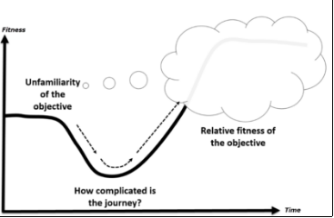

Name of Journal will go here
An Official Publication
of the Informing Science Institute
InformingScience.org
Journal URL will go here
Name of Journal will go here
An Official Publication
of the Informing Science Institute
InformingScience.org
Journal URL will go here
Volume x, 20xx
Formatting Guidelines for Papers Published in Informing Science Institute journals
Leveraging Data Analytics for Enhanced Decision-Making in Modern Organizations
|
Lucas André |
Paulista-Pe |
lavs1@discente.ifpe.edu.br |
This paper explores the transformative role of data analytics in enhancing decision-making processes across modern organizations. By examining real-world applications and trends, the study highlights how advanced analytical techniques are being employed to extract actionable insights from vast datasets. Key findings demonstrate that organizations leveraging data analytics experience improved efficiency, agility, and competitiveness in dynamic market environments. Furthermore, this research emphasizes the importance of integrating data-driven strategies with organizational goals to maximize their impact. The findings contribute to a deeper understanding of data analytics as a critical driver of innovation and success in contemporary business practices.
|
Aim/Purpose |
Explore the role of data analytics in enhancing decision-making in modern organizations. |
|
Background |
Highlights the increasing need for sustainable strategies in response to environmental concerns. |
|
Methodology |
Combines case studies and surveys from key stakeholders to evaluate effectiveness and barriers. |
|
Contribution |
Provides actionable insights for integrating technology to promote sustainable development. |
|
Findings |
Identifies predictive modeling as a critical tool in reducing carbon emissions and optimizing resources. |
|
Recommendations for Practitioners |
Encourages adopting AI-driven analytics to measure and enhance sustainability performance. |
|
Recommendations for Researchers |
Suggests exploring advanced computational tools to enhance the precision of sustainability forecasts. |
|
Impact on Society |
Facilitates a transition towards greener practices, benefiting the environment and economic growth. |
|
Future Research |
Explores emerging AI technologies to further streamline sustainability initiatives. |
|
Keywords |
Sustainability, predictive modeling, technology integration, carbon reduction, resource optimization |
To put the first page of your document in the proper format, copy the content of the first page from this file into your document and fill in the abstract information.
Once the Editor has accepted your paper, insert the full name, the affiliation (University or Company), City, Country, and email address for each author into the table on the first page. Insert additional rows if there are more than two authors. If there is more than one author, place an asterisk after the corresponding author’s name.
In the Author section at the end of the paper, add a short biography and a head-and-shoulders photo (if available) for each author.
The abstract is a brief summary of the contents of the article; it should give enough information to make the reader want to learn more about your research, but it needs to be concise. In each of the boxes on the first page, enter one or two brief sentences appropriate for your paper. Omit citations from the abstract; citations for the paper’s sources do appear in the body of the paper.
If any of the abstract subtopics do not apply to your paper, put “NA” in that box.
All papers should begin with an introduction that sets the stage for the discussion. For some disciplines, it is more appropriate to use Background as an alternative first section.
The body is a collection of multiple sections describing the main content of the paper. You should use up to three levels of headings to categorize content as deemed necessary: Heading 1, Heading 2, and Heading 3.
This section summarizes the paper, presents challenges, suggests future study, and so on to create a lasting impression of the paper.
If there is an appendix, place it after the References and before the Biography. If there is more than one appendix, add a letter after “Appendix.” Appendices must be mentioned at the appropriate places within the body of the document.
If you have used a questionnaire in a study, include a copy of it as an appendix.
Following the conclusion is a list of all references used in the body of the paper. The current APA formatting guidelines are used to make internal citations within the body as well as provide the complete alphabetic list of reference citations at the end of the paper. (See the Entering References section for more details. We have placed a summary of these guidelines at https://www.informingscience.org/Uploads/APA_7ed.pdf ). The References list contains only works cited in the paper and all works cited in the paper must be listed in the References section.
After the paper is accepted, at the end of the paper, for each author please provide a one or two paragraph biography that describes the author’s background relevant to this article. If you have one, insert a head-and-shoulder photo to the left of the biography of each author or send it separately and we will insert it.
To make it easier to read the paper online, use single-column formatting for the paper.
Set the paper size to Letter, which is 8 1/2 by 11 inches.
Set the top and bottom margins to 1 inch and the right and left margins to 1.25 inches.
Insert page numbers in the footer. We will add the remaining information for the headers and footers.
Hyphenate the text in the document. To turn on hyphenation:
Footnotes should not be used at all. Insert your note within the body of the paper (if it is important) or omit it. The editors will remove footnotes and place the material within the text.
If you have not attached these styles to your paper, use Word’s default paragraph styles for your document, making just the changes indicated below.
Do not number headings. Enter the headings with no outline numbers or letters in front of them.
Use the Paper Title style for the title of your paper. It is centered with a border under it. The font for this style is Garamond, 16 point, Bold, and Small Caps.
The paragraph formatting is Centered with a 6 point space after it and an underline border at the bottom. The “Keep with Next” property is selected.
Capitalize the first letter of every major word. Do not use all upper case.
Use the Heading 1 style for the title and for major headings. The font for this style is Garamond, 16 point, Bold, and Small Caps.
The paragraph formatting has a 12 point space before and a 6 point space after it and an underline border at the bottom. The “Keep with Next” property is selected.
Capitalize the first letter of every major word. Do not use all upper case.
Use the Heading 2 style for second level headings. The font for this heading is Garamond, 14 point, Bold, Italic and Small Caps. The space before the paragraph is 6 point and the space after is 3 point. The “Keep with Next” property is selected.
Capitalize the first letter of every major word in second level headings. Do not use all upper case.
Use the Heading 3 style for third level headings. The font for this heading is Garamond, 12 point, Bold. The space before the paragraph is 3 point and the space after is 3 point. The “Keep with Next” property is selected.
Capitalize only the first word and proper nouns in this heading.
Use the Normal style for paragraphs of text. The paragraph is single-spaced with no indentation and has a 6-point space after it. The font for this style is 11 point Garamond. Do not put blank lines between paragraphs.
Forth level. Three levels of headings are enough for most papers. If you need another level, such as for this paragraph, use the Normal style and place the heading at the beginning of the paragraph in bold font.
Lists. Use Word’s automatic bullet or number formats for lists.
References: Use a 10 point Garamond font with a hanging indent of 0.25 inches.
Other. Use other formats only when absolutely necessary.
A table is data presented in tabular format with rows and columns. A figure is any other pictorial representation of data such as graphs or drawings. Each figure or table must be numbered and have a brief caption that describes it. Every figure or table must be referenced in the body of the paper. Table 1 is an example of a table and Figure 1 is an example of a figure.
Table 1. Example of a table
| ID# | LAST | FIRST | CATALOG # | CATEGORY | QUANTITY | AMOUNT | COMMISSION |
| S00001 | Golden | Rod | M00002 | Multiple | 2 | $250.00 | $12.50 |
| S00001 | Golden | Rod | M00012 | Hiking | 1 | $50.00 | $2.50 |
| S00001 | Golden | Rod | M00028 | Multiple | 1 | $95.00 | $4.75 |
| S00002 | Red | Rose | M00038 | Multiple | 1 | $35.00 | $1.92 |

Figure 1. Example of a figure
The caption for tables is placed above the table; the caption for figures is placed below the figure.
All accepted papers need to be reformatted before publication; therefore, it is important that all figures and tables can be easily resized and/or moved . Since tables and figures may be moved during the final formatting, do not use “above” or “following” when referring to them; just give the table or figure number. Also, do not use automatic numbering of tables and figures as these can become corrupted when figures or tables must be rearranged. Tables and figures may be inserted directly into the paper or placed on separate pages at the end of the paper.
Insert figures formatted as an image that can be resized if needed. It is best if they are inserted directly into the paper with “in line” wrapping.
Do not send figures formatted as separate text boxes or groups of images on the page.
We will publish your paper under a Creative Commons Attribution-NonCommercial 4.0 International License and the author retains the copyright.
By submitting the paper, as author you certify the following:
There are three common sources of figures.
References are to follow the current American Psychological Association (APA) guidelines. We have
placed a summary of these guidelines on the web at
https://www.informingscience.org/Uploads/APA_7ed.pdf
You can also find information at
https://apastyle.apa.org/apa-style-help
Click on Style and Grammar Guidelines and select
In-text Citations or References.
List the sources alphabetically at the end of the paper under the References heading. Place entries in alphabetical order according to the last name of the first author. Within the text of your paper, cite sources by placing the author’s last name and the date in parentheses.
Reference list. In the reference list, when a work has up to (and including) 20 authors, list all authors (last name followed by initials). Place a comma after the last name of each author and after that author’s initial(s). Place an ampersand (&) before the last author. If there are more than 20 authors, provide last names and initials of first 19 authors, insert three ellipsis points, and add the last author’s name. Follow the authors by the date, the title, and the source.
In-text citations. If a work has two authors, include both authors in each in-text citation (Boyd & Cohen, 2003). If the work has three or more authors, in all in-text citations place only the first author followed by et al. (Gill et al., 2019).
DOIs and URLs in Reference list. When citing sources from the Web, include the year of publication or the most recent update. End the entry with a DOI if it has one. DOIs begin with https://doi.org/ followed by numbers and letters that identify the document, for example, https://doi.org/10.28945/2714 If it does not have a DOI, end the entry with the URL. Do not end the path statement or a DOI with a period . DOIs can be found by going to https://apps.crossref.org/SimpleTextQuery and entering the reference entries for which you want DOIs.
(Leave this blank when submitting for review.)